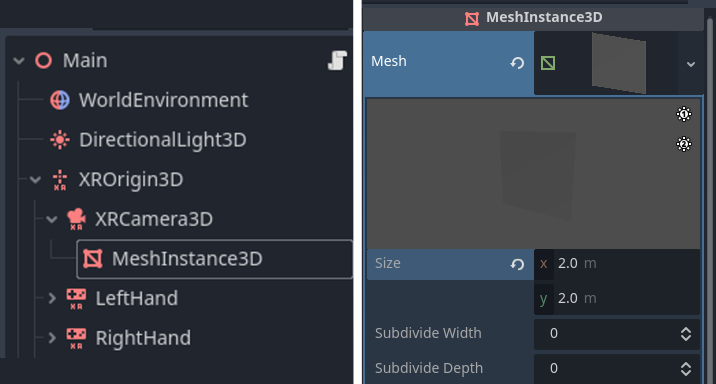
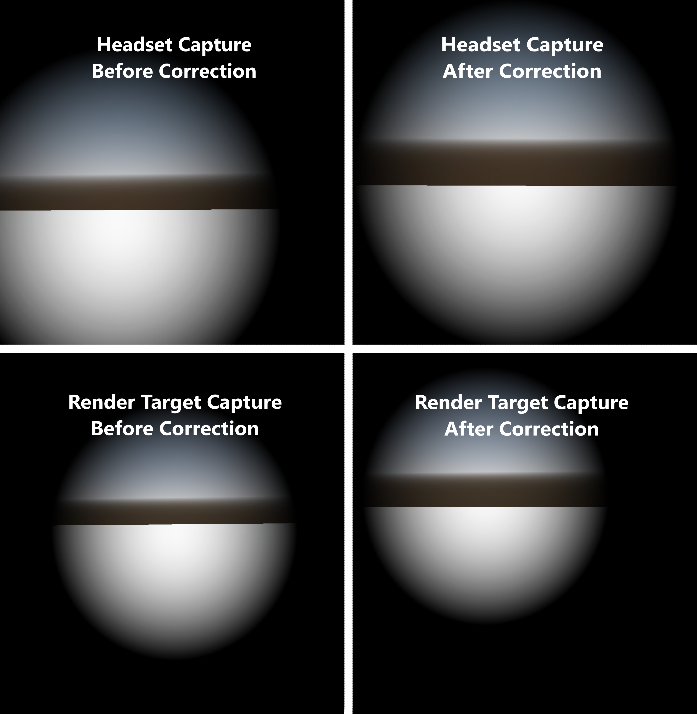

Hiệu ứng toàn màn hình trong XR
Khi thêm hiệu ứng toàn màn hình tùy chỉnh vào ứng dụng XR, một cách làm là dùng một quad phủ toàn màn hình và áp dụng hiệu ứng vào shader của quad đó. Hãy thêm một node MeshInstance3D vào scene làm con của XRCamera3D, và đặt thuộc tính mesh thành một QuadMesh. Đặt chiều rộng và chiều cao của quad là 2.

Sau đó bạn có thể thêm shader cho quad để nó phủ kín màn hình. Việc này được thực hiện bằng cách đặt biến dựng sẵn POSITION của vertex shader thành vec4(VERTEX.xy, 1.0, 1.0). Tuy nhiên, khi tạo một hiệu ứng được căn giữa thẳng phía trước tầm nhìn của người dùng (như hiệu ứng vignette), kết quả cuối cùng có thể trông không đúng trong XR.
Dưới đây là các ảnh chụp góc nhìn mắt phải với một vignette shader, cả từ kính lẫn từ chính render target. Các ảnh bên trái dùng shader chưa chỉnh sửa; các ảnh bên phải điều chỉnh quad toàn màn hình bằng ma trận chiếu. Dù ảnh bên trái được căn giữa trong render target, nó lại lệch tâm trong góc nhìn của kính. Nhưng sau khi áp dụng ma trận chiếu, ta thấy hiệu ứng được căn giữa ngay trong kính.

Áp dụng ma trận chiếu
Để căn giữa hiệu ứng đúng cách, POSITION của quad toàn màn hình cần tính đến trường nhìn bất đối xứng. Để làm điều này mà vẫn đảm bảo quad phủ kín toàn bộ render target, ta có thể chia nhỏ quad và áp dụng ma trận chiếu cho các đỉnh bên trong. Hãy tăng subdivide width và depth của quad.

Sau đó, trong hàm vertex của shader, ta áp dụng một độ lệch từ ma trận chiếu cho các đỉnh bên trong. Đây là ví dụ về cách bạn có thể làm điều này với vignette shader đơn giản ở trên:
shader_type spatial;
render_mode depth_test_disabled, skip_vertex_transform, unshaded, cull_disabled;
// Modify VERTEX.xy using the projection matrix to correctly center the effect.
void vertex() {
vec2 vert_pos = VERTEX.xy;
if (length(vert_pos) < 0.99) {
vec4 offset = PROJECTION_MATRIX * vec4(0.0, 0.0, 1.0, 1.0);
vert_pos += (offset.xy / offset.w);
}
POSITION = vec4(vert_pos, 1.0, 1.0);
}
void fragment() {
ALBEDO = vec3(0.0);
ALPHA = dot(UV * 2.0 - 1.0, UV * 2.0 - 1.0) * 2.0;
}
Ghi chú
Để biết thêm về FOV bất đối xứng và mục đích của nó, xem Câu hỏi thường gặp của Meta về trường nhìn bất đối xứng này.
Hạn chế
Phương pháp hiệu ứng toàn màn hình này không gây lo ngại về hiệu năng với các hiệu ứng theo từng pixel như vignette shader ở trên. Tuy nhiên, không nên đọc từ screen texture khi dùng kỹ thuật này. Các hiệu ứng toàn màn hình cần đọc từ screen texture về cơ bản sẽ vô hiệu hóa mọi tối ưu hiệu năng kết xuất trong XR. Đó là vì khi đọc từ screen texture, Godot tạo một bản sao đầy đủ của render buffer; điều này làm tăng mạnh khối lượng công việc cho GPU và có thể gây ra vấn đề về hiệu năng.